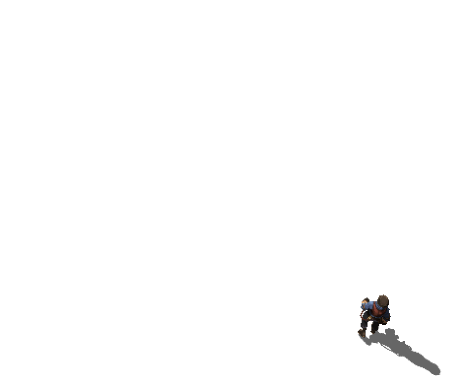

优化移动设备上的实时阴影
2016-7-28
之前写过一篇如何在移动设备上实现实时阴影的文章，主要的思路上在光源位置将需要投射实时阴影的物体渲染到一张 RenderTexture 上，然后在渲染地面的时候通过光源的 View Projection 矩阵采样 RenderTexture。效果上完全没有问题，但是在性能上还有很大的提升空间。
使用以上的方法，在渲染地面的时候，每一个 fragment 都会对 RenderTexture 进行一次采样。一般在整个游戏画面中，地面所占像素的比例是比较高的，屏幕中大部分像素都会被地面占据。也就是说会有大量的 tex2D(_ShadowMap, uv)，大量的纹理采样是一个很大的消耗。而实时阴影基本上只会占这些 fragment 中的一小部分。

白色区域的 fragment，对 RenderTexture 进行了大量的纹理采样，但是这对最终的实时阴影效果没有任何提升，造成资源的浪费。
如果可以将这些浪费的区域所产生的消耗降到最小，将会使整个游戏的性能得到很大的提升。
想到的方法是，不将 RenderTexture 直接投射到地面上，而是投射到角色脚下的一个面片上，每个角色脚下都有一个面片。这样面片以外的区域就不用进行 RenderTexture 的纹理采样，减少了大量的 tex2D 操作。但是随之而来的一个问题是，对于高低起伏的地面，面片会穿插到地面模型中，这是无法接受的。这里提供了个 Trick。我在渲染的顺序和着色器状态上做了点文章。原本透明面片的 Shader 中设置是这样的：
Tags{ "Queue"="Transparent" }
Blend SrcAlpha OneMinusSrcAlpha
ZWrite Off
做些调整：
Tags{ "Queue"="Geometry+1" }
Blend SrcAlpha OneMinusSrcAlpha
ZWrite Off
ZTest Always
可以看到，我调整了透明面片的渲染顺序， 并且将深度测试修改为永远通过。经过这样一番处理，即使地面是凹凸不平的，面片也不会和地面产生穿插。原理就是利用了 Depth Buffer 和渲染顺序。需要注意的是，要被阴影覆盖的 Queue 必须小于 Geometry+1，不被阴影覆盖的 Queue 必须大于 Geometry+1，所以就需要对场景中渲染的 Queue 做一个好的规划。在大部分视角下，并不会有穿帮的感觉，即使是在高低起伏的台阶处效果也是可以接受的，一般玩家无法察觉出异常。
经过这样的优化，相比直接在地面上进行 RenderTexture 采样，性能有了大幅的提高。还有一个关键点，就是要控制好透明面片的大小和位置。对于有跳跃或飞行的角色来说，面片并不是永远在脚底正下方向，而是在光线入射方向经过角色位置和地面的交点处，这个位置是需要实时计算的。